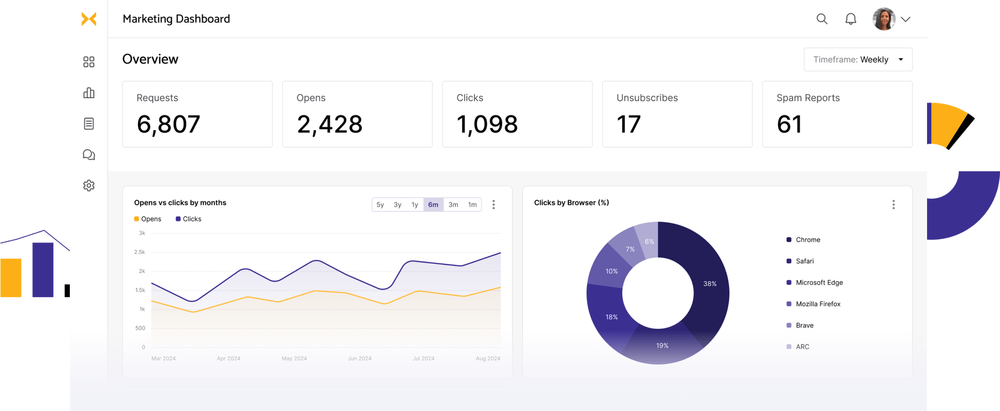

Short answer: Start freelancing in order — skill first, profile second, first client third. Learn how Fiverr gigs and Upwork proposals really work, use DigiSkills.pk and e-Rozgaar training, and build trust with sample projects. This guide walks through the sequence so you stop waiting for orders and start winning them.
Skill first, profile second, first client third. Learn how Fiverr gigs and Upwork proposals really work, use DigiSkills.pk and e-Rozgaar training, and build trust with sample projects.
Freelancing looks simple from the outside: create a profile, list a service and wait for orders. In reality, successful freelancing is a sequence. First you need a marketable skill, then proof that you can do the work, then a profile that explains your value clearly, and finally communication and delivery that turn a first buyer into reviews and repeat work. The best freelancing courses for beginners teach that full sequence, not just how to open an account. This guide explains how to choose a service, learn from trusted training programmes, set up Fiverr and Upwork properly, and approach your first client without hype, spam or unrealistic promises about quick income.
Clients do not search for a person who can do everything. They search for a specific outcome: a logo, a product video edit, a WordPress page, an SEO article, or a social media design set. Pick one skill you already have or are actively learning — graphic design, writing, video editing, web development, SEO or virtual assistance are common starting points — and turn it into one narrow, understandable service. Narrow does not mean small ambition. It means a buyer can instantly understand what they will receive, how long it will take and why it helps them. You can expand your services later after reviews prove your reliability.

Always check official programme and platform pages for current enrolment, eligibility and rules, because programmes and policies change. Free training is valuable, but it does not remove the need for practice. Before you approach clients, create two or three sample projects as if they were real commissions: a complete logo package, three edited short videos, a sample article with headings and images, or a small website. Samples solve the beginner's biggest problem — having no reviews yet — by giving buyers something concrete to judge instead of only your promises or course certificates.
Never copy another freelancer's gig text, buy fake reviews, or promise results you cannot control, such as guaranteed sales. Those shortcuts can get accounts restricted. Fast, polite replies and accurate delivery times matter more. Read each platform's current terms on its official site and keep communication and payment inside the platform where required.

Your first goal is not maximum price; it is a completed job, a happy client and an honest review. Offer a small, well-defined starter service so the buyer risks little. Reply quickly, confirm the brief in writing, deliver on or slightly before the deadline, and include a brief, friendly handover message explaining the files. If a revision is reasonable, handle it calmly and learn from it. After delivery, thank the client and make it easy for them to return. Repeat clients and referrals are where freelancing becomes stable, because you spend less time searching and more time doing paid work you already understand.
Tip: Write proposals for the client, not about yourself. One sentence showing you understood their project is worth more than a long list of every tool you have ever opened.
Start with a fair entry price for your first few genuine orders, then raise it gradually as reviews and quality improve. Track your time so you learn which services are profitable. Avoid copied proposals or quitting after a quiet first week — marketplaces reward consistency and good delivery history over time.
Create a narrow gig, upload strong samples, use a clear title and images, share your gig professionally, and deliver excellent work quickly when the first order arrives.
Yes, but build sample projects first. Clients need evidence. Two or three realistic samples in your chosen skill are far better than an empty profile.
The best skill combines your ability, real demand and work you can sustain — design, video editing, writing, web development and marketing are all proven categories.